Designing for Urdu
A usability analysis of a multilingual application to propose design guidelines for better integrating Urdu into digital solutions.
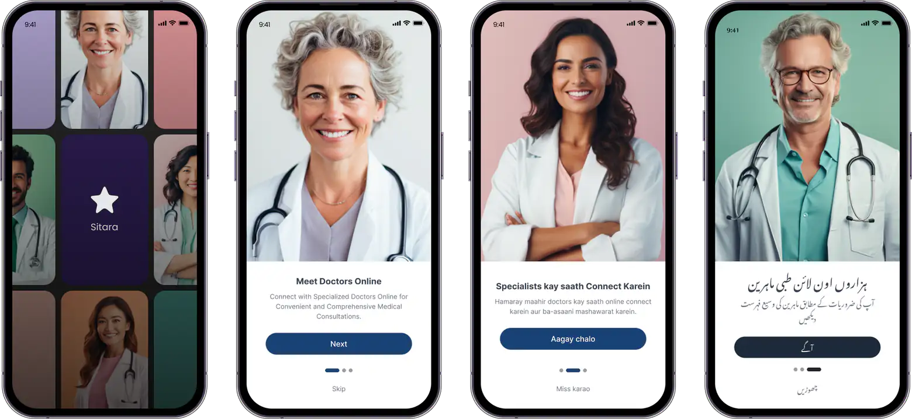
The Problem
The majority of mobile applications in Pakistan are in English language, despite Urdu being the lingua franca of the country. This is primarily due to:
Limited Technological Support
Limited technological support for the Urdu language due to the complex nature of its script.
High Illiteracy Rates
High illiteracy levels (42%) among users in Pakistan, with even lower levels of English literacy.
No Standard Design Guidelines
No standard design guidelines for Urdu language to support application development.
Motivation
Due to the limited technological support for the Urdu language, a significant portion of Pakistan's population — particularly older adults and residents of rural areas — struggles with mobile interfaces that are exclusively in English. However, in recent years, specifically since 2020, we have witnessed a surge in local startups developing mobile applications with Urdu interfaces.
Despite this growing interest in Urdu applications, many developers still struggle to implement best practices for Urdu design. We cannot blame the developers too. There is no Urdu-specific design guideline!
We set out to develop a standardized design guideline for Urdu language that developers can consult when creating Urdu mobile interfaces.
Understanding Urdu
Before I tell you about my design process, I want to explain why Urdu — despite being the world's 10th most spoken language — is hard to integrate into technology.
Right-to-Left Script
Like Hebrew and Arabic, Urdu is a right-to-left (RTL) language. A key distinction between RTL and left-to-right (LTR) languages is "mirroring," where the direction of content is reversed, affecting the alignment of icons, text, and numbers.
The RTL design guidelines must be tailored to the specific script and language. Unfortunately, there has been no effort to develop RTL design guidelines specifically for Urdu.
Nastaliq vs. Naskh Script
The RTL languages like Persian, Urdu and Arabic can be written in Naskh script. However, Naskh is less familiar to Pakistanis, as most physical Urdu content is traditionally written in the Nastaliq script.
However, Nastaliq script complicates coding in modern technology due to its complex vertical and horizontal strokes.
Roman Urdu
Most Urdu speakers use Latin characters for texting, a practice known as Roman Urdu. For example, the Urdu term for 'language,' زبان, can be transliterated as zubān, zubaan, or other phonetic equivalents in Latin script.
However, there is no standardized spelling for Roman Urdu, leading to inconsistencies in its representation.
Identifying Issues with Existing Applications
We conducted a two-part usability study to identify workflow issues in existing applications and evaluate usability problems in a newly designed interface. Insights from both studies were used to develop an Urdu-specific design guideline.
We selected 3 applications with different language interfaces: English, Urdu, and Bilingual (a combination of English and Urdu). We began with a testing of popular user workflows with 4 participants and noted down the task completion time. The goal was to pinpoint usability problems unique to Urdu digital content to develop a mobile application tailored for Urdu, adhering to best practices in design guidelines.
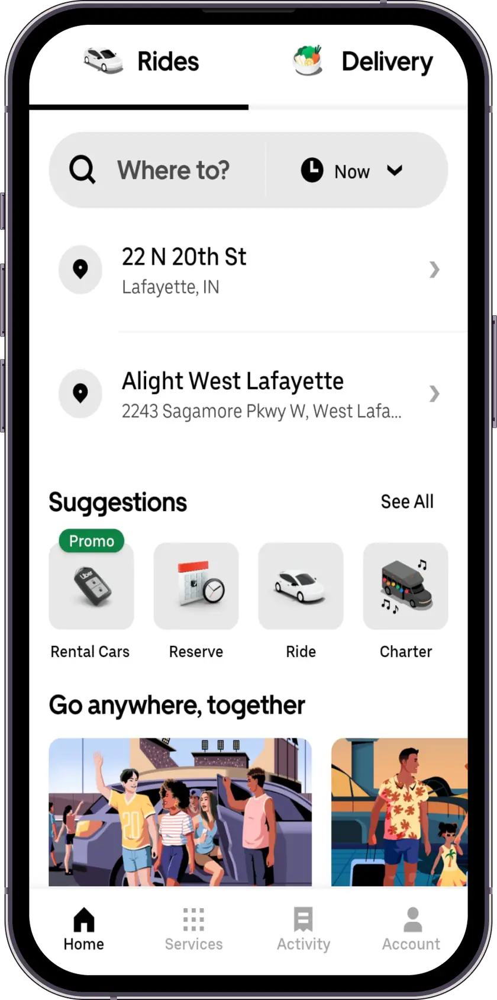
Uber Eats
Online food ordering and delivery platform — tested as the English-only baseline.
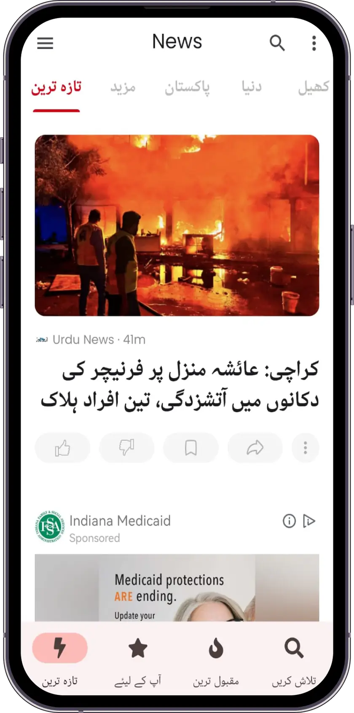
Urdu News
Urdu-language news platform — tested as the fully Urdu application.
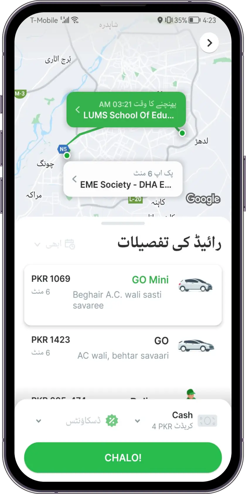
Careem
Ride-sharing platform — tested as the bilingual application in Urdu and English.
Three key insights emerged from these tests:
Users apply mental models developed from their experience with English applications when navigating Urdu applications.
Users find it challenging to comprehend Urdu content presented in the Nastaliq script.
The visual elements of Urdu applications significantly impact the ease of navigation.
Designing and Testing Applications
The insights from our initial usability tests helped us identify key considerations for integrating Urdu into digital solutions. Building on these findings, we developed prototypes of a health application with four distinct interfaces: English, Urdu, Roman Urdu, and Bilingual. We then conducted between-subject usability tests with 12 participants.
We chose a health application because users are familiar with medical processes such as booking appointments, making it a relevant and practical choice. The inclusion of a Roman Urdu interface was a deliberate design decision to assess user reactions to this format.
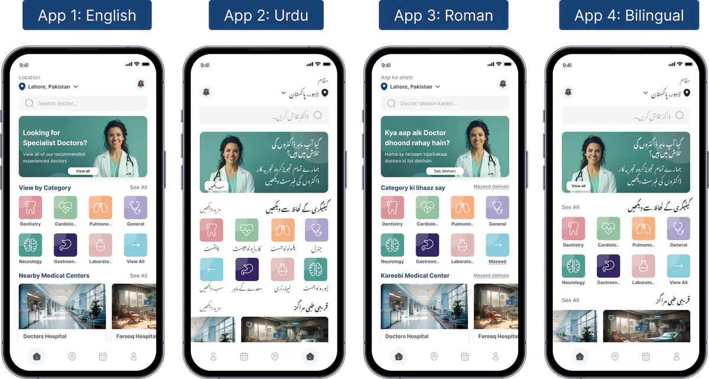
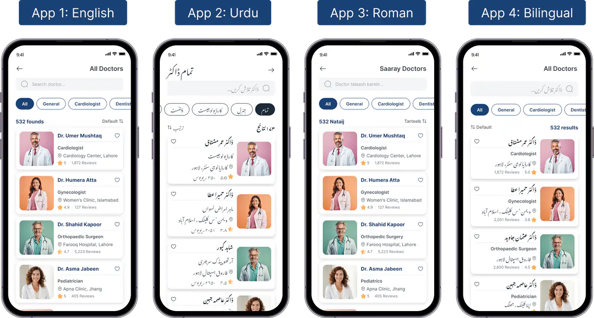
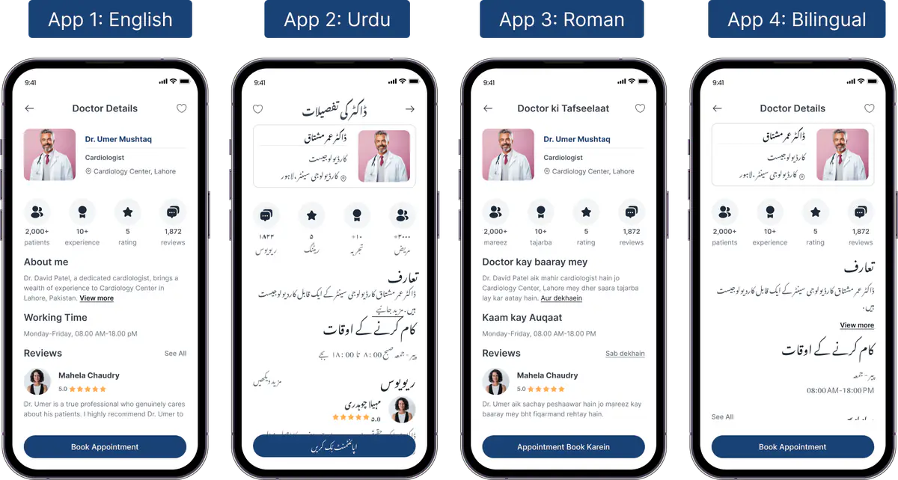
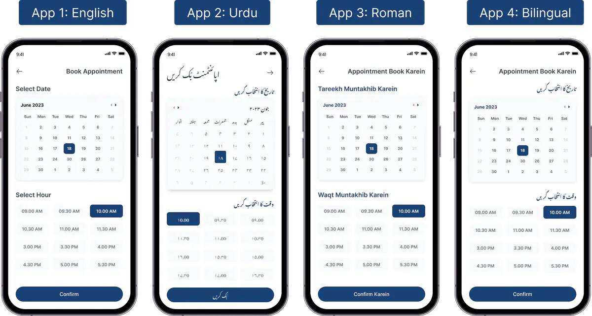
Each variant — English, Urdu, Roman Urdu, and Bilingual — was tested with participants on identical tasks. Results revealed significant performance differences:
| Application | Completion Rate | Time per Task (s) | Error Rate |
|---|---|---|---|
| English | 100% | 9.31 ± 0.06 | 0.17 ± 0.07 |
| Urdu | 88% | 19.08 ± 5.62 | 0.5 ± 0.33 |
| Roman Urdu | 100% | 11.37 ± 0.5 | 0.17 ± 0.19 |
| Bilingual | 96% | 14.96 ± 1.01 | 0.17 ± 0.07 |
Design Guidelines
Based on our evaluations, we propose developers use a combination of Urdu and English when designing interfaces for Urdu users. Our design guideline provides insights into UI elements that could enhance the presentation of the Urdu language.
Text Size
Size. Apply a larger font size and greater vertical height for the Nastaliq script than its English equivalent to enhance content visibility.
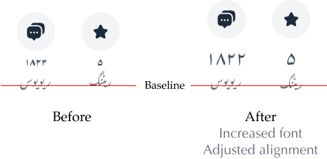
Spacing
Spacing. Increase vertical spacing between Urdu words and other elements to establish textual hierarchy and prevent words from intercepting vertically.
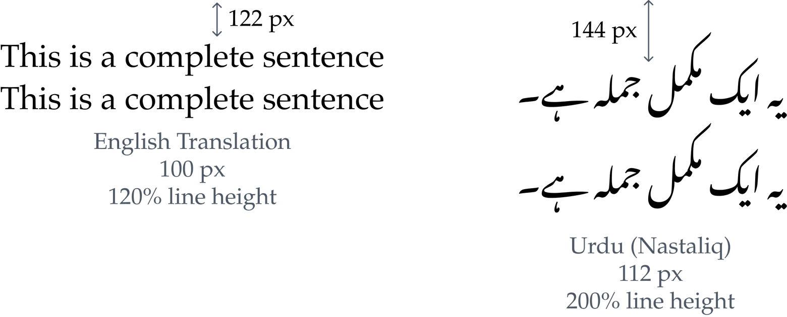
Terminology
Use English for domain-specific technical terms. For example, the term 'cardiologist' in Urdu typically retains its English pronunciation.
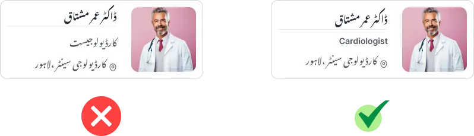
Calls to Action
Use English for CTA phrases. Urdu translations of these phrases, when available, are typically less common and usually only transliterations.
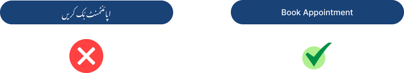
When a CTA accompanies Urdu text, align it with the parent component's orientation.
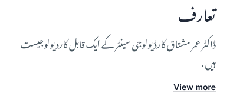
Numbers and Time
Retain numbers and time in Latin script.
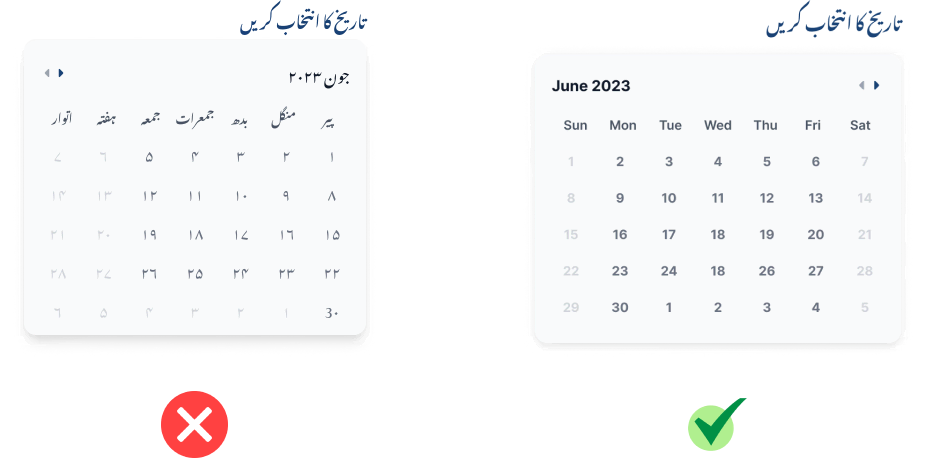
Reflection
This project holds a special place in my heart, as I have seen my parents and other older family members struggle with mobile interfaces that are exclusively in English. It was my first endeavor to create a practical solution for mobile developers aiming to design applications for Urdu-speaking users. The project emphasized heuristic evaluations, providing me with a significant learning opportunity. Setting up usability tests and analyzing data on this scale was a valuable experience, as I had never conducted such extensive usability studies before.
However, our study was not without limitations. For instance, we used a stopwatch to record task completion times, which may have introduced inaccuracies. Additionally, some reviewers might critique the fact that the mobile applications selected for the initial usability test serve different purposes, which could complicate comparisons between their usability.